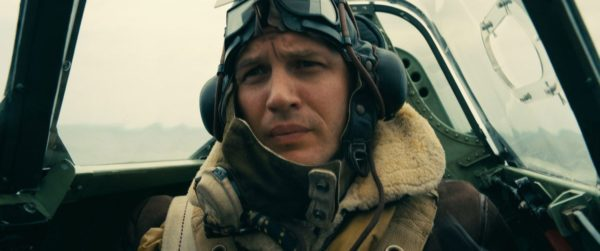
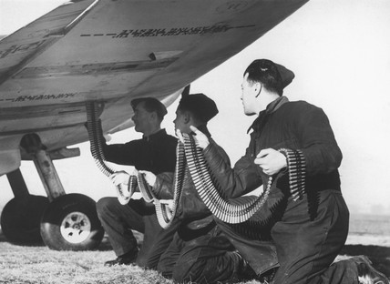
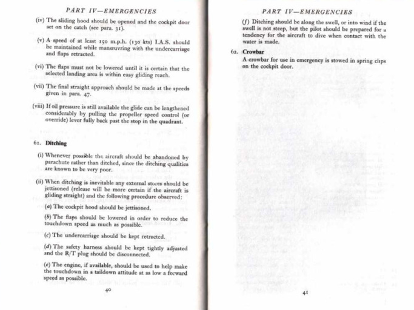
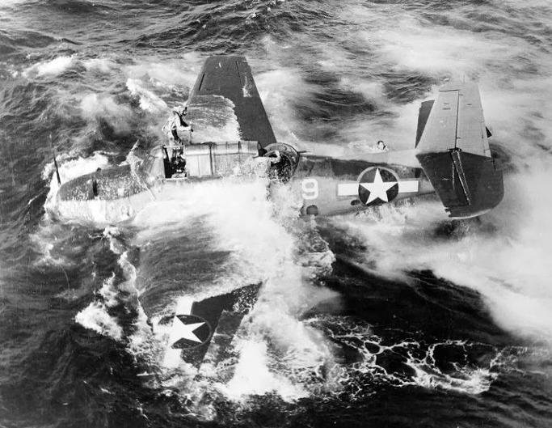
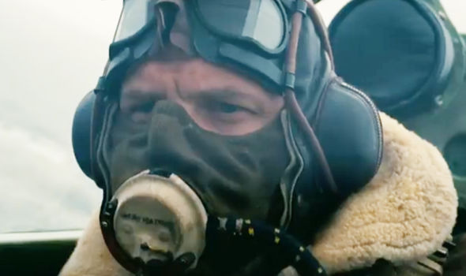
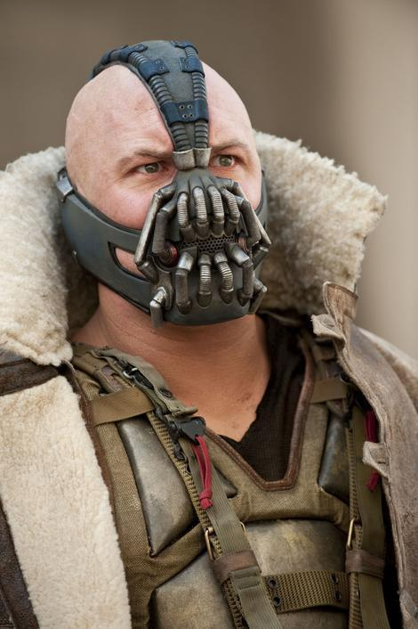
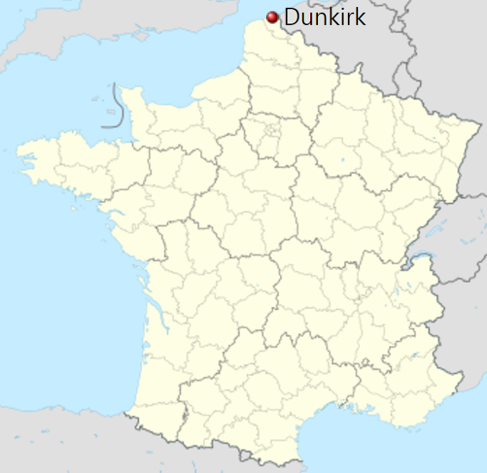
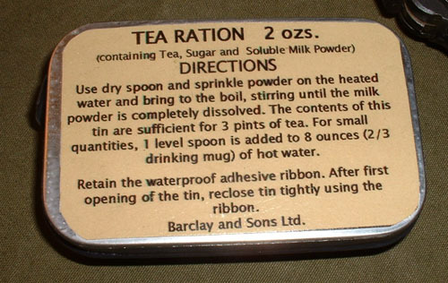
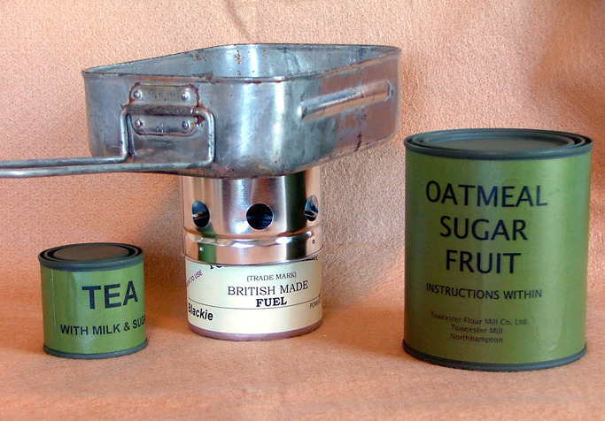

영화 덩케르크 보면서 궁금했던 점들 - 불시착부터 홍차까지
게시: 2017-07-27T01:24:17+09:00
영화 덩케르크 개봉 기념으로, 영화 보면서 궁금했던 점 몇가지 정리했습니다. (주의 : 일부 약한 스포일러 있습니다.)

1. 톰 하디의 스핏파이어 전투기에는 총알이 몇 발이나 들어 있었을까요 ?
어설프게 만든 전쟁 영화 또는 드라마의 특징이 총에 화수분 탄약이 들어 있는지 총알이 떨어지는 일 없이 아주 무한정 쏟아지는 것입니다. 톰 하디가 몰던 스핏파이어에는 몇 발의 총알이 들어 있었을까요 ?
스핏파이어에도 여러 종류가 있습니다만, A wing 타입의 기체에는 0.303 구경 (7.7mm) 브라우닝 마크 2 기관총이 날개당 4정씩, 총 8정 장착되어 있었고, 정당 장탄수는 350발씩이었습니다. 이 브라우닝 마크 2 기관총은 초당 발사 속도가 약 7발 정도이므로, 톰 하디가 쏜 것처럼 약 2초씩 끊어서 쏜다면 총 50초, 즉 25번을 사격할 수 있었습니다. 제가 영화 보면서 대충 세어보니 정말 25번 정도 쏘더군요. 놀란 감독 철저합니다.
우리나라 공군이 보유한 F-15 전투기의 경우 6개의 총신으로 구성된 20mm 개틀링 벌칸포가 장착되어 있는데, 총 장탄수는 940발입니다. 이 벌칸포는 초당 발사 속도가 약 100발이므로, 한번에 2초씩 끊어서 쏘면 대략 4~5번 사격할 수 있습니다. 요즘 전투기 영화에서 여러번 드르륵 드르륵 긁어대는 것은 알고 보면 다 잘못된 설정인 셈입니다.

2. 왜 톰 하디는 영국군 지역에서 낙하산으로 탈출하지 않고 독일군 지역으로 날아가 불시착을 했을까요 ?
다음 URL은 양키들이 이 덩케르크 영화를 보고 서로 토론하는 레딧 쓰레드인데, 여기서도 왜 톰 하디가 낙하산으로 뛰어내리지 않고 굳이 불시착하여 독일군에게 포로가 되는 것을 택했는가에 대해 열띤 토론이 있었습니다.
https://www.reddit.com/r/Dunkirk/comments/6ol611/spoilers_discussion_thread_dunkirk/
토론 초반에 세를 얻은 썰은 크게 두가지였습니다.
(1) 슈투카를 격추시킨 것에 대해 지상군이 환호를 올리는 상황에서, 조종사가 낙하산으로 탈출하는 모습을 보여주어 지상군의 사기를 떨어뜨리지 않기 위함이었다.
(2) 그냥 추락시킬 경우 독일군이 부서진 기체를 손에 넣어 군사 기밀인 전투기 정보를 넘겨주게 되므로, 확실히 소각처분하기 위해 불시착한 것이다.
그러나 후반부에 자신이 항공 관계자라고 주장하는 사람이 나와 간단히 정리를 했습니다. 제 생각에는 이것이 말이 되는 이야기입니다.
(3) 고도가 너무 낮으면 낙하산으로 탈출이 불가능하다. 왜 영국군 지역에 불시착하지 않았느냐고 ? 엔진이 멈춘 비행기는 약간만 선회해도 곧장 실속(stalling)하여 땅에 쳐박힌다. 선택의 여지가 없었던 것이다.
실제로 1941년 6월, 스핏파이어 전투기를 몰다가 구름 속에서 아군기끼리 충돌하여 탈출해야 했던 John Gillespie Magee라는 조종사는 120m 상공에서 탈출했으나 낙하산이 펴지기 전에 땅에 떨어져 즉사했다는 기록이 있습니다.
3. 콜린스(톰 하디의 동료 조종사)는 왜 바다 위에 불시착을 선택했나요 ?
예나 지금이나, 추락하는 비행기에서의 낙하산 탈출(bailing out)은 매우 위험한 행위입니다. 더군다나 당시 전투기에는 조종석 밑에 로켓이 달린 자동 사출 장치가 없었기 때문에 더욱 위험했습니다. 가장 흔한 사고는 비행기에서 뛰어내린 직후 자기 자신의 비행기의 꼬리 날개에 부딪히거나, 낙하산 줄이 꼬리 날개에 엉키는 것이었습니다. 그건 사실상 죽음을 뜻했지요. 바다 위에서 낙하산을 펴는 것은 더욱 위험했습니다. 물 위에 떨어진 다음에 낙하산과 낙하산 줄에 엉키면 구명조끼를 입고 있어도 익사의 위험이 있었습니다. 따라서 기체 상태가 양호하다면 조종사 개인적으로 바다 위에 불시착(ditching)하는 것을 택하는 것도 충분히 있을 수 있는 일이었습니다.
4. 그렇다면 당시 영국 공군 조종사들은 '웬만하면 낙하산 펴지 말고 바다 위에 불시착하라'고 훈련 받았나요 ?
아닙니다. 특히 영화 속에 나오는 스핏파이어(Spitfire) 전투기의 경우 공식 매뉴얼에서 "낙하산 탈출을 권고하며, 바다 위에 ditching하는 것은 불가피한 경우에만 허용"한다고 되어 있습니다. 이유는 스핏파이어의 특성, 즉 ditching quality가 매우 좋지 않았기 때문이었습니다. Ditching quality가 나쁘다는 것은 물 위에 불시착하는 경우, 전투기가 기수를 바다 속으로 쳐박으며 물 속으로 급격히 가라앉는다는 이야기였습니다. 그래서 스핏파이어의 매뉴얼에는 불가피하여 ditching할 경우엔 반드시 물결(swell)을 따라 착륙할 것을 권고하며, 절대 파도가 밀려오는 방향으로 불시착을 시도하지 말라고 되어 있습니다.

5. 콜린스는 왜 조종석 덮개 유리창(canopy)을 닫고 불시착했나요 ? 그렇게 덮개를 닫고 불시착하는 것이 당시의 표준 절차였나요 ?
역시 아닙니다. 역시 저 매뉴얼에는 불시착시에는 덮개를 열고 착륙하라고 되어 있습니다. 이 캐노피라고 불리는 덮개 유리는 (영화 속에서 콜린스가 겪었던 것처럼) 적탄이든 결빙이든 여러가지 이유로 걸림이 발생하여 열리지 않는 경우가 많았던 모양입니다. 아마도 그런 경우 때문인지, 스핏파이어 조종석 옆에는 crowbar(흔히 빠루라고 부르는 쇠지렛대)가 구비되어 있었습니다. 다만 기체에 화재가 발생한 경우에는 최후의 순간까지 열지 말라고 되어 있습니다. 비행 중에 캐노피를 열면 화염이 조종석 안으로 밀려들어올 가능성이 많았으니까요.

6. 톰 하디는 독일군에 포로로 잡힌 뒤 어떻게 되었을까요 ?
전쟁이 끝날 때까지 포로 수용소에 갇혀 있었을 것이고, 대접은 그렇게까지 나쁘지는 않았을 것입니다. 톰 하디처럼 전투기 조종사는 그나마 나았는데, 폭격기 조종사와 승무원의 경우는 재수없으면 전쟁 포로가 아닌, 전범 또는 간첩으로 분류되어 SS(나찌 친위대)가 운영하는 별도의 수용소에 갇혀 취조와 고문, 심지어 처형을 당하기도 했습니다. 당시 폭격기들의 공격 대상은 군대가 아니라 민간인이 거주하는 도시였거든요. 그래서 Terrorflieger (영어로는 terror flier), 즉 일종의 테러리스트로 분류되었습니다. 라마슨(Phil Lamason)이라는 뉴질랜드 출신의 영국군 조종사는 랭카스터 폭격기로 임무 수행 중 격추되어 포로가 되었는데, SS에게 넘겨져 열악하고 잔인한 SS 수용소에 갇혀 있었습니다. 라마슨을 포함한 약 168명의 연합군 폭격기 조종사 및 승무원 포로들은 결국 집단 처형될 운명이었는데, 그렇게 되기 직전 어떻게 사정을 전해들은 독일 공군이 '그런 짓을 용납할 수는 없다'라고 개입하여 간신히 일반 전쟁 포로 수용소로 옮겨질 수 있었다고 합니다. 독일 육군도 그랬지만, 독일 공군도 SS라면 영 질색을 했다고 합니다.
위에서 언급한 레딧 쓰레드에 톰 하디가 포로 수용소에 간 뒤 탈출하는 속편 영화도 나왔으면 좋겠다고 하니까 아래와 같은 댓글이 달리더군요.
He gets attacked in the POW camp while protecting a child - no ordinary child.. a child born in hell !
톰 하디는 포로 수용소에서 어떤 아이를 보호하다가 다구리를 맞게 되지 - 그 아이는 보통 아이가 아니었어... 지옥에서 태어난 아이였지 !


7. 영어로는 '덩커크'라고 읽는 것은 알겠는데, 어떻게 Dunkirk가 프랑스어로 '덩케르크'라고 읽히는 것인지요 ?
간단합니다. Dunkirk는 영국인들이 이 도시를 가리키는 영어식 이름일 뿐이고, 원래 프랑스어로는 Dunquerque라고 쓰고 '됭께흐끄' 정도로 읽습니다. 일본섬 쓰시마를 한국어로는 대마도라고 표기하고 발음하는 것과 비슷하다고 보시면 됩니다. 영국인들은 유럽 곳곳에 현지 사람들이 뭐라고 부르든 상관하지 않고 자기들 나름대로 엇비슷한 발음의 엉뚱한 이름을 붙인 것이 꽤 있습니다. 대표적인 것이 베네치아(Venezia)를 베니스(Venice)라고 부른다던가, 피렌체(Firenze)를 플로렌스(Florence)라고 부르는 것 등입니다.
한국어로는 덩케르크라고 표기되는 이 작은 도시에는 네덜란드어 이름도 있는데 Duinkerke(됭케르커)라고 하고, 원래 뜻은 모래(dun) 교회(kerke)라는 뜻이랍니다. 실제로 이 도시는 원래 네덜란드 땅이었는데, 네덜란드가 통째로 합스부르크 가문의 지배 하에 들어가면서 영국-프랑스-스페인-네덜란드 독립군 사이에서 이리저리 주인이 바뀌었습니다. 그러다 17세기 후반에 영국왕 찰스 2세가 프랑스에게 이 도시를 32만 파운드에 매각하면서 지금처럼 프랑스 땅으로 굳어졌습니다. 지금도 이 도시는 프랑스어권 도시로는 세계 최북단에 있는 도시라고 합니다.

8. 구조되어 구축함에 승선한 병사들에게 주어진 홍차에는 우유와 설탕이 들어 있었을까요, 레몬이 들어 있었을까요, 아니면 그냥 아무 것도 넣지 않은 straight tea였을까요 ?
알 수 없습니다만 우유와 설탕이 들어 있었을 확률이 훨~씬 큽니다. 지금은 좀더 다양해졌다고 합니다만 (저 영국 가 본 적 아직 없습니다), 당시 영국인들이 마시던 차는 대개 우유와 설탕이 든 것이었습니다.
왜 영국인들이 녹차가 아닌 홍차를 마시게 되었는가에 대해서는 크게 2가지 설이 있는데, (1) 홍차의 보존 기간이 좀더 길기 때문에 중국에서 느린 범선으로 실어나르던 차는 일부러 홍차를 골라 실었다는 것 (2) 영국인들은 커피나 코코아에 이미 설탕을 넣어 마시고 있었는데, 설탕을 넣어 마시기에는 녹차보다는 홍차가 좀더 잘 어울리는 맛이었다는 것 등입니다. 아마 2가지 이유가 복합적으로 작용한 것이 아닐까 합니다.
홍차에 우유를 넣는 것은 고대부터 중국과 거래하여 차를 마셔왔던 중앙 아시아의 유목민들도 흔히 차를 마시던 방법입니다. 심지어 버터를 넣기도 한답니다. 특히 원래 싸구려 독주인 진(gin)을 진탕 마셔 술주정뱅이의 나라로 유명했던 영국이 산업 혁명 시대로 접어들면서 생산성 향상을 위해 공장 노동자들에게 진과 맥주 대신 설탕과 우유를 넣은 차를 마시도록 유도했습니다. 원래 홍차는 전량 중국에서 직수입하던 고급품이었다가, 수입량이 늘어나고 특히 식민지 인도에서 차 플랜테이션이 성공하면서 일반 노동자들도 쉽게 마실 수 있게 된 기호품이었습니다. 노동자들도 그런 고급 기호품을 마시게 되어 기뻐했고, 공장주들은 이제 노동자들이 술을 적게 마셔 생산성이 늘어나니 좋았습니다. 특히 설탕과 우유를 넣은 차, 그리고 잼을 바른 빵 한조각은 고된 노동에 지친 노동자들에게 필요한 열량을 공급해주는 좋은 새참이었습니다.
따라서 영국군 병사들에게 주어지는 홍차에도 당연히 설탕과 우유가 들어가 있었습니다. 아래 사진은 2차 세계대전 당시에 지급된 인스턴트 홍차 분말 깡통인데, 차와 함께 설탕과 분유가 들어가 있는 것을 보실 수 있습니다. 이와 달리 진짜 찻잎이 든 깡통이 배급되기도 했답니다. 이렇게 병사들에게 홍차를 공급하느라, 1942년 영국은 유럽 대륙 전체에서 유통되던 홍차를 모조리 사들여 사재기를 하기도 했습니다.


Source :
https://en.wikipedia.org/wiki/Supermarine_Spitfire
https://www.reddit.com/r/Dunkirk/comments/6ol611/spoilers_discussion_thread_dunkirk/
https://en.wikipedia.org/wiki/List_of_accidents_and_incidents_involving_military_aircraft_(1940%E2%80%9344)
http://www.armchairgeneral.com/forums/showthread.php?t=77451
http://www.techsupportforum.com/forums/f36/survival-rate-of-shot-down-pilots-during-world-war-ii-366842.html
http://spitfireforums.com/index.php?action=printpage;topic=297.0
http://www.avialogs.com/index.php/en/aircraft/uk/supermarine/spitfire/ap-1565i-pilots-notes-for-spitfire-ixxi-xvi.html
https://en.wikipedia.org/wiki/Dunkirk
https://reprorations.com/Britain%20WW2/WW2-Britain%20page%202.htm
https://www.thevintagenews.com/2017/06/02/during-wwii-the-british-government-bought-the-worlds-entire-supply-of-tea